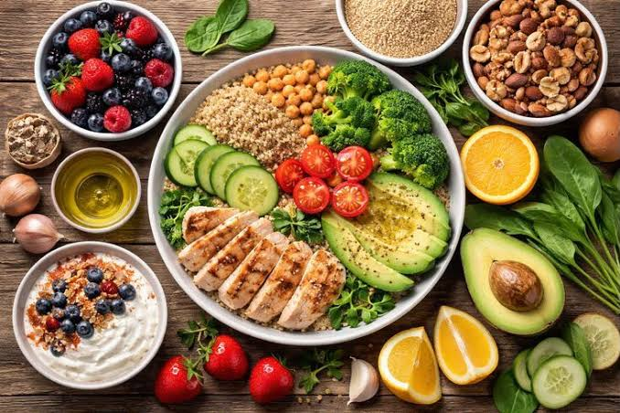
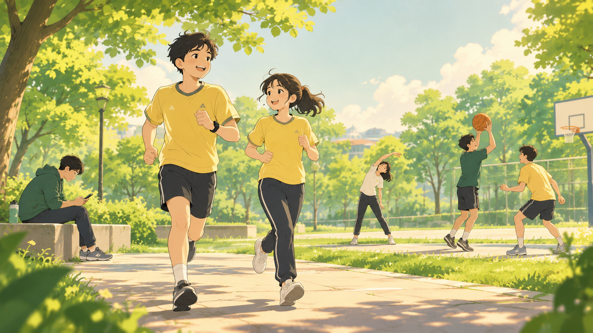

Edukasi seputar gizi, aktivitas fisik, dan pencegahan dini untuk membangun kualitas hidup yang berkelanjutan demi masa depan yang lebih bugar.
Pendidikan kesehatan memegang peranan krusial dalam membentuk kesadaran masyarakat, terutama generasi muda. Dengan memahami dasar-dasar kesehatan preventif, kita dapat mengantisipasi berbagai risiko penyakit tidak menular yang kini semakin marak di usia produktif.
Berikut adalah tiga pilar utama yang menjadi fokus edukasi dalam mewujudkan gaya hidup sehat sehari-hari:

Asupan gizi yang seimbang memastikan tubuh mendapatkan energi optimal dan mikronutrien yang dibutuhkan untuk menjaga daya tahan tubuh serta fokus belajar.

Mengurangi waktu duduk yang terlalu lama dan membiasakan diri beraktivitas fisik membantu menjaga kesehatan kardiovaskular dan kebugaran otot.
Kesehatan mental yang terjaga serta kualitas tidur yang cukup adalah fondasi penting agar tubuh dapat melakukan regenerasi sel secara maksimal.
Perubahan kecil yang konsisten jauh lebih berdampak daripada perubahan besar yang dilakukan secara instan. Mari mulai langkah pertama hari ini demi kualitas hidup yang lebih baik di masa depan.